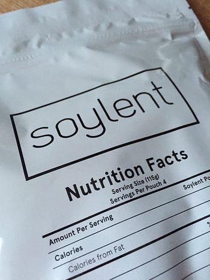

My week with Soylent 1.4, or “Oh god I want a burger”

I’m always curious about how changing a habit will affect me and have little aversion to change. My main apps for email, search, and anything else get regularly switched, and so do my mobile OSes. I quit (or double!) caffeine intake. I think that in doing so, I’m cultivating a personality that thrives on learning and change. So when Soylent hit my radar, I was excited to see what it’d do for me.
If you’re curious about Soylent, here’s their website. It’s basically that liquid meal Neo eats on the Nebuchadnezzar in The Matrix. Soylent has all the calories and nutrients you’d need to be healthy. A Science Happy Meal, basically.
Some background on me #
I’ve been an active guy for the last few years. 5x weekly workouts, I’m a vegetarian of a 2.5 years, and eat fairly healthy. Mostly greens, and I meet the recommended protein intake for folks like me. I tracked things heavily at first through Jawbone’s UP and MyFitnessPal, enough to get an idea of my diet. I did fine, and it’d bore you to death if I got into that here.
What I wanted to learn #
Would it help me get more willpower to resist things that were bad for me? I’m terrible with sweets and fear diabetes and cavities.
How would food affect my cognitive ability? My diet makes me foggy in the afternoon sometimes, and it would be super to be able to devote more time to solving problems.
Would I become leaner and weigh less? I’m not overweight, but I wonder if this would be a signal for how well I’m doing with my current diet.
Willpower #
Me in real life.

Dude, if you put me up with basically any kind of sweet, I will pound it down (Pop Rocks are my drug of choice, by the way). That’s kind of scary and I don’t want to be beholden to that kind of addiction.
Luckily, the week was rife with willpower tests. A friend brought in homemade strawberry rhubarb pop tarts with frosting the day after I started. Read that again: HOMEMADE. STRAWBERRY. POP. TARTS. There were lots of other sweets throughout the week, including free ice cream (I should also state that my religious affiliation could probably be Americone Dream). I successfully avoided all sweets. Every one of them. I wonder if it was because I knew I was getting everything I needed with Soylent.
Either way, that was an incredible win. I would use this to help me break food addictions.
Cognitive ability #
Important: always feed and water yourself, else you become a hangry Hulk.

In the afternoon, I’ll usually get a little foggy. With Soylent, I was able to talk through any problem at any point in the day, even before lunch when people usually get hangry. And I can achieve Hulk-levels of hanger if not fed and watered properly, so I’m keen on avoiding that if at all possible. Even late into the evening, my brain was as sharp as it was earlier in the day.
This category was a total win.
Weight, etc. #
I thought that I might see a reduction with my weight or body fat percentage. I realize I had a small sample size of a week here, but it isn’t unusual for me to weigh 1-3 pounds lighter on Monday than I did on Friday.
Nope, everything stayed exactly the same. Maybe I’d see more with longer usage. I wasn’t disappointed though.
What else I noticed #
This dog is my spirit animal.
God, I missed food. By day 3, I laid awake dreaming of a burger. Or a pizza. Or anything that I could chew and enjoy that didn’t look like a ground-up beige PC tower (just where do they go when you throw them out? Tell me! You can’t prove to me that I’m not eating one!).
I had planned in advance to allow myself a meal a few 5 days in. And let me tell you, that was one of the most amazing veggie burgers I’d ever had. I tasted every little bit of flavor that they baked into it. I probably cried a little out of joy.
Also, I could not get enough water. Drinking 8–10 glasses a day wasn’t enough. It had other consequences that were…unpleasant. It made any bathroom time weird because towards the end of my experiment I was backed up. I kept Gas-X with me along the way, because I had a lot of it. And it was foul.
What’s next #
Soylent, overall, is a concept I like in small quantities. It won’t be replacing 3 meals a day for me, though. I think it’s likely I’ll keep it for breakfast and maybe a lunch during the week. It makes me feel pretty great, and I look at it as a tool to help me be a better thinker and problem solver. I’m so glad I tried it.
Just writing this makes me want a burger. So, thanks for reading, I’m out to get one.